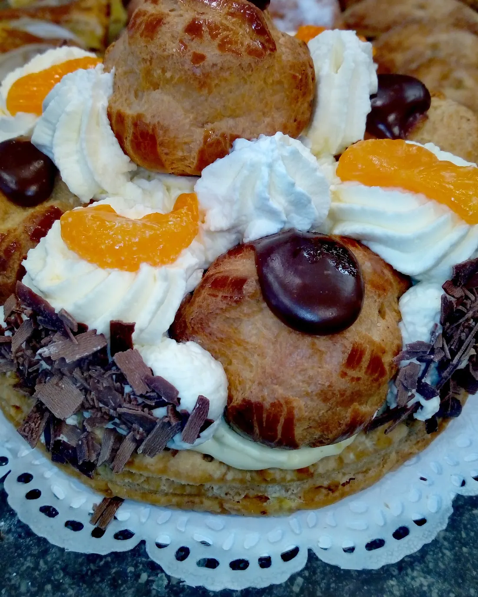
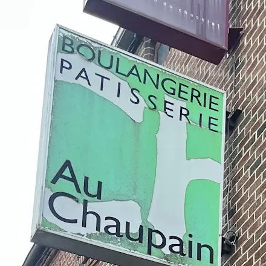
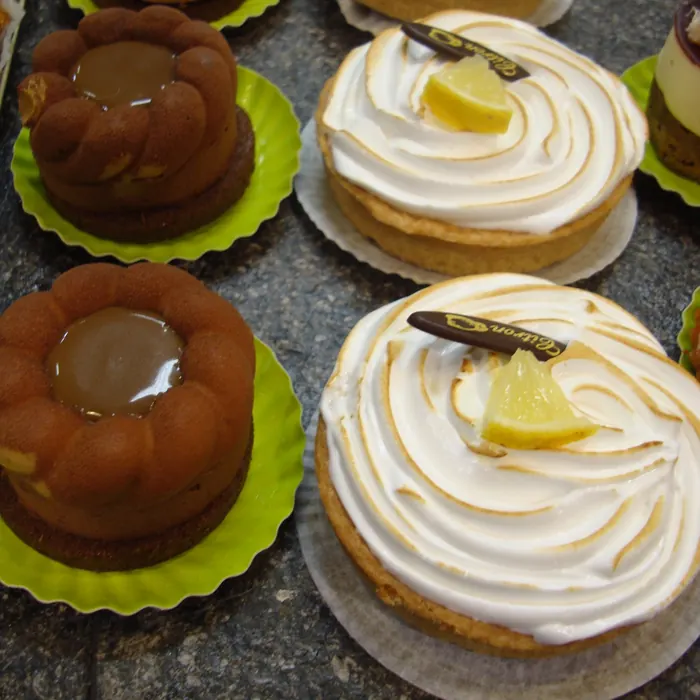
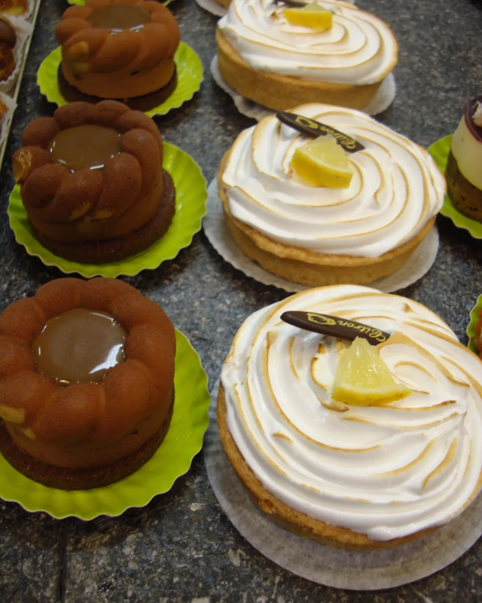
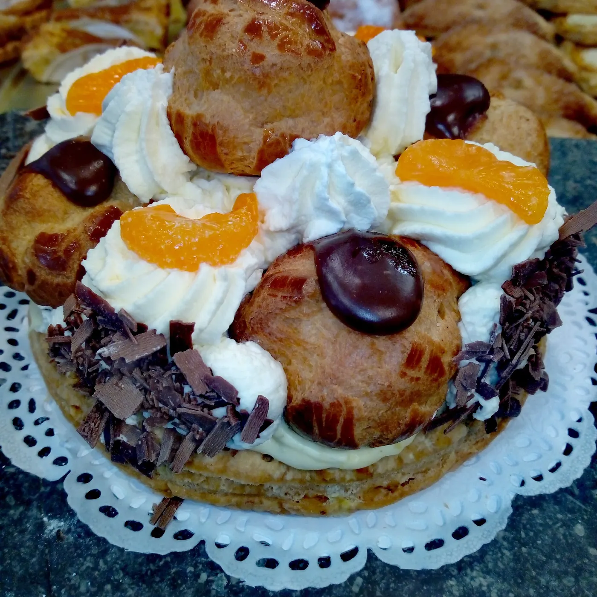
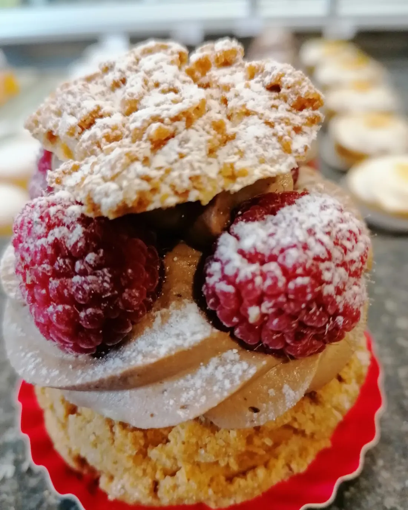
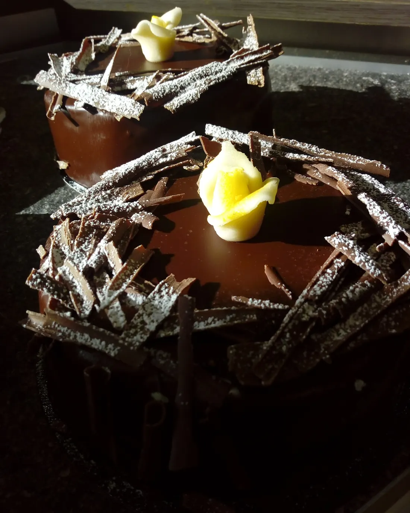
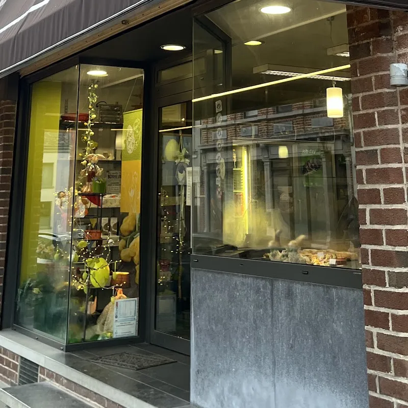
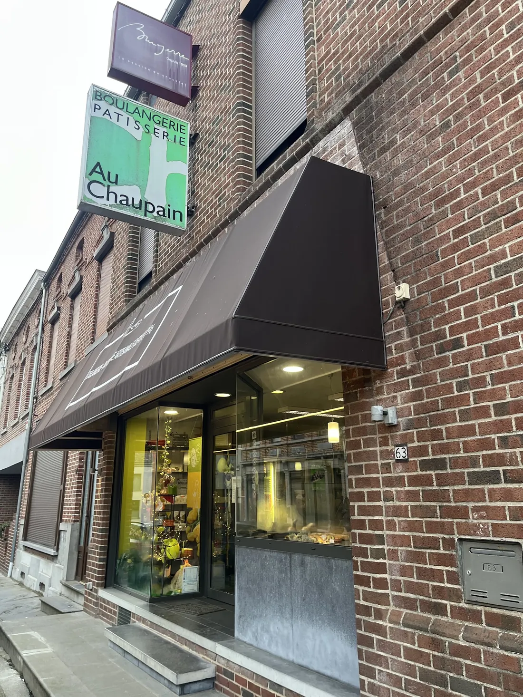
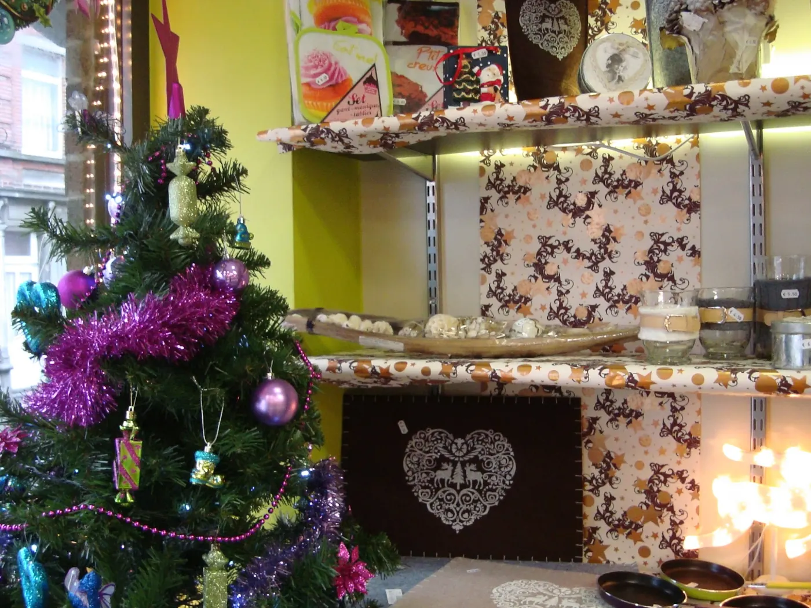

Boulangerie · Pâtisserie
AuChaupain
rue de la Station, à WalcourtPain au levain, baguettes, sandwiches bien garnis et pâtisseries de vitrine. Une boulangerie artisanale, comme on en trouve de moins en moins.
7 h – 19 h · fermé mardi et mercredi
4,3 sur 5 · 94 avis Google

Saint-Honoré aux mandarines

Les pâtisseries
Meringue dorée, choux, crème et copeaux de chocolat : quelques douceurs passées par le comptoir de la rue de la Station.




La vitrine change d'un jour à l'autre : un coup de fil au 071 61 29 73 pour savoir ce qui vous attend.

Le pain, la baguette et le sandwich de midi
Avant les gâteaux, il y a le pain. Les clients parlent d'un grand choix de pains, d'un pain au levain « excellent » et de baguettes dignes des meilleures de France. À midi, on repart avec un sandwich garni, crudités ou pas.
Le levain
« Excellent pain au levain, merci pour ce beau travail ! »Michael C., avis Google
Les baguettes
« […] Mention spéciale pour les baguettes qui sont exceptionnelles et dignes de ce que l'on trouve de mieux en France. »F. G., avis Google
Les sandwiches
« […] Le plus possible d acheter un sandwich très bon et bien garni, choix possible ou non de crudités. […] »Virginie V., avis Google
Ce que disent les clients
Passer à la boulangerie
Rue de la Station, au centre de Walcourt. Ouvert cinq jours sur sept, de 7 h à 19 h.

Horaires
Lundi7 h – 19 h
Mardifermé
Mercredifermé
Jeudi7 h – 19 h
Vendredi7 h – 19 h
Samedi7 h – 19 h
Dimanche7 h – 19 h
Le dimanche aussi, de 7 h à 19 h. Fermé le mardi et le mercredi.
